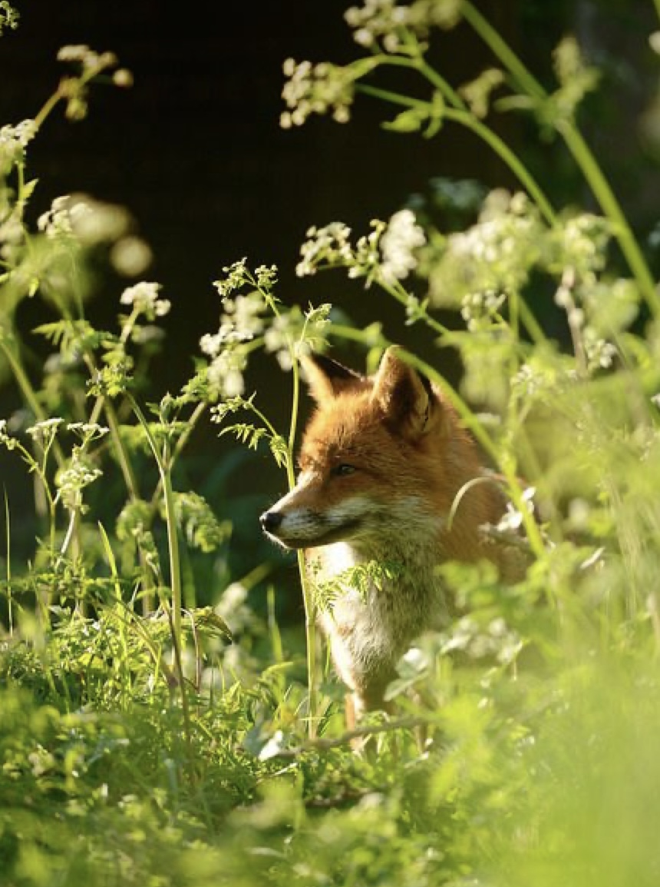
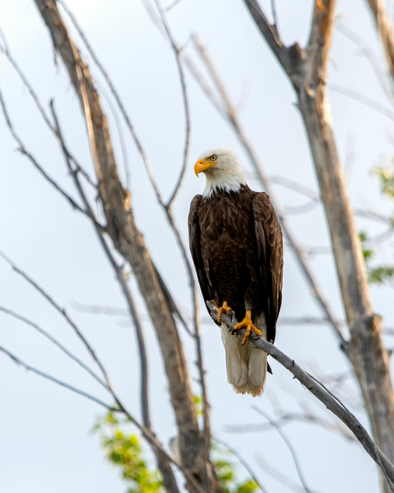
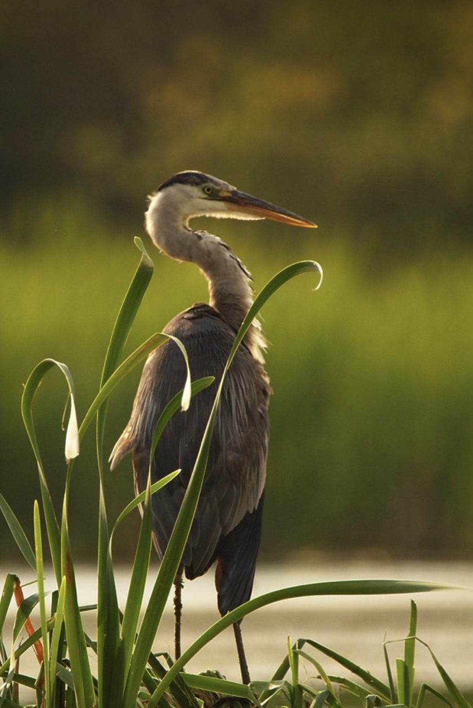
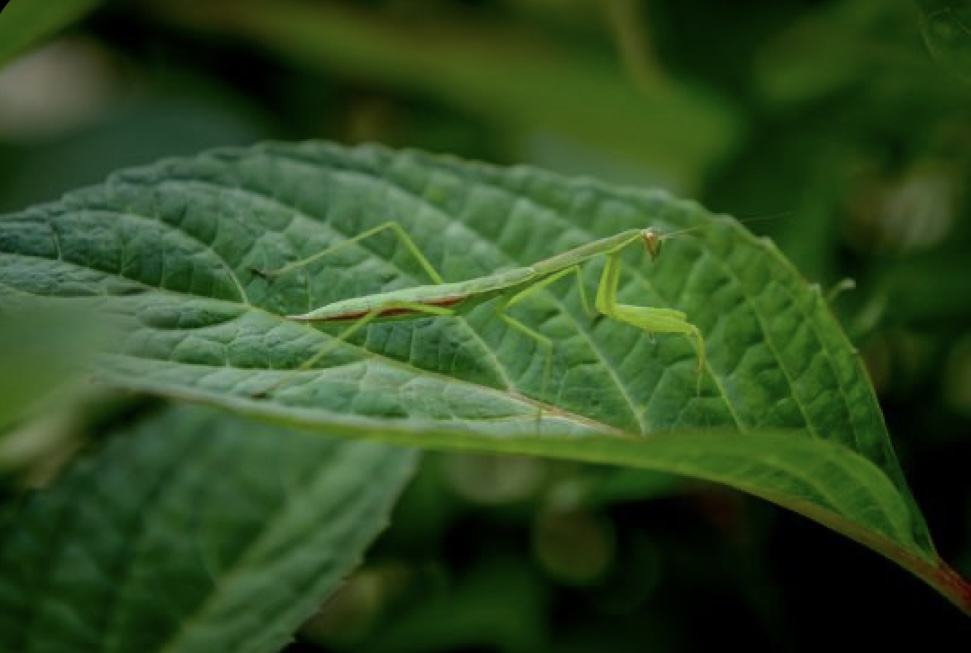
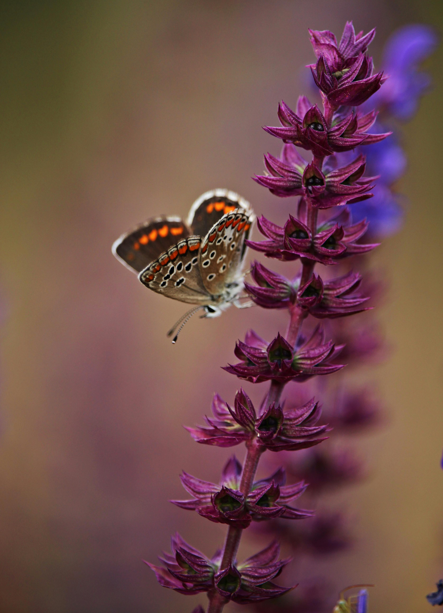
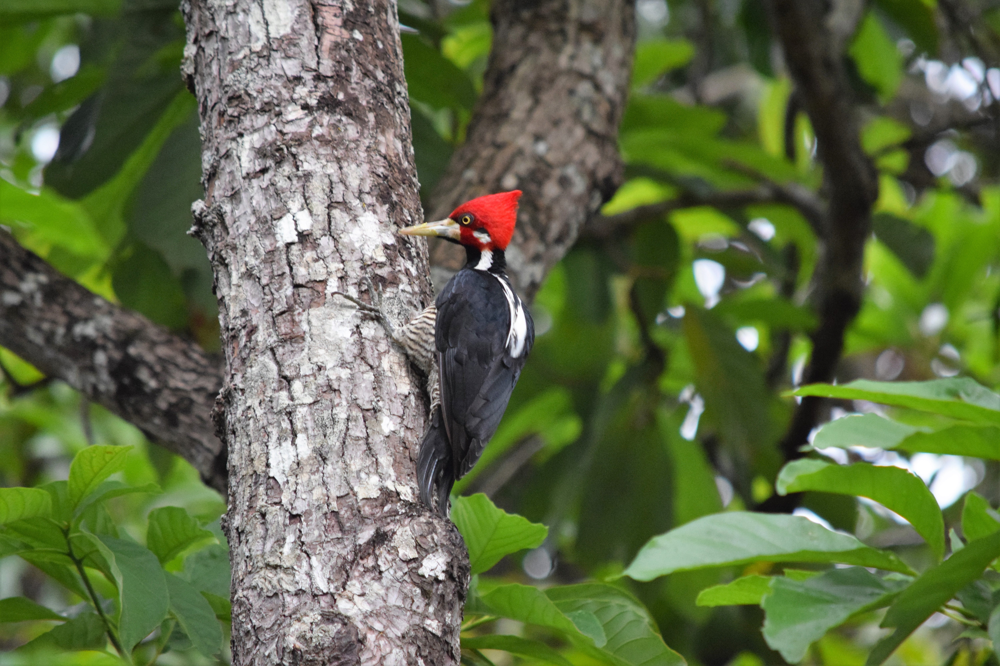
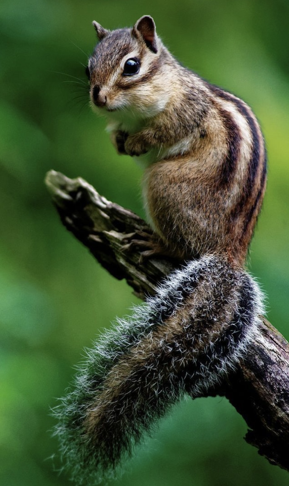
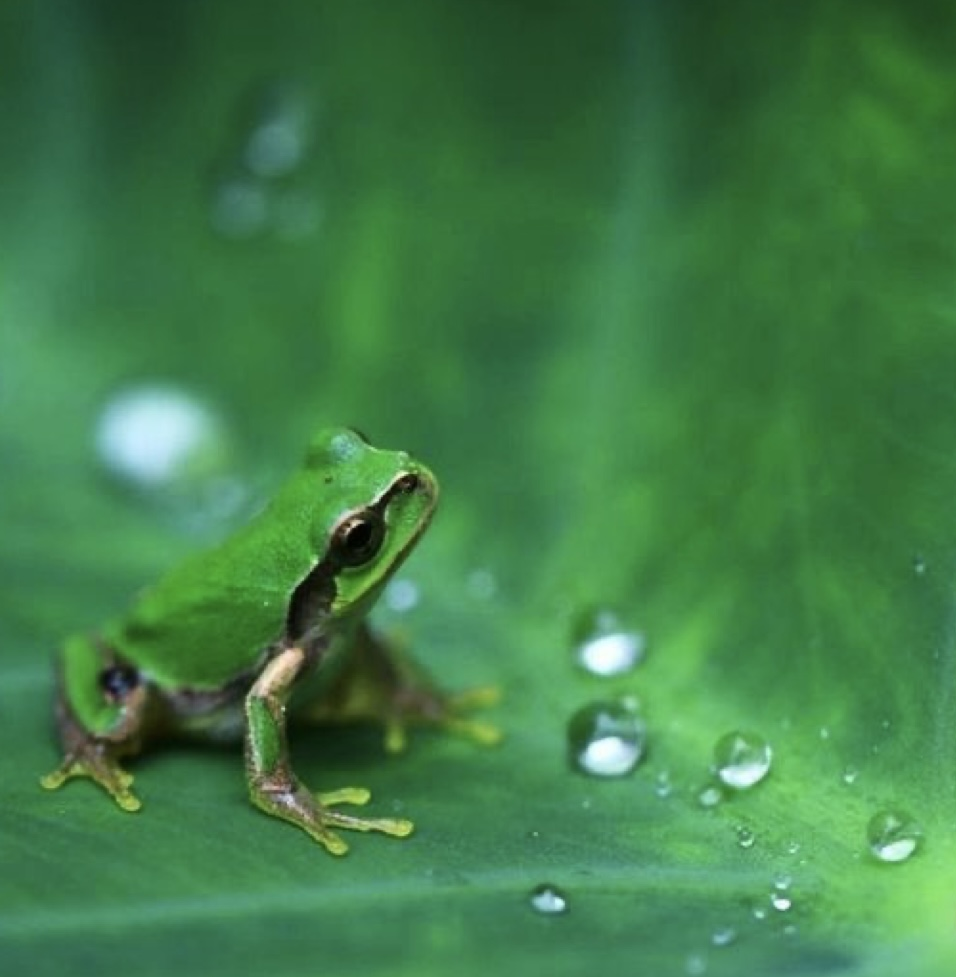

|  | FoxesEncounter the elusive foxes that inhabit the diverse ecosystems of Gladstone National Park. With their sleek coats and keen senses, foxes are a captivating sight to behold. Keep your eyes peeled during dawn and dusk for a chance to catch a glimpse of these cunning creatures as they navigate their natural habitat with grace and agility.. |
LeopardThe leopard in Sri Lanka is a specific subspecies known as the Sri Lankan leopard (Panthera pardus kotiya). It is native to the island and is considered the apex predator in its habitat. The Sri Lankan leopard is known for its agility, strength, and stealth, making it an efficient hunter. It has a golden coat with rosette patterns, which provide excellent camouflage in the jungle environment. Unfortunately, the Sri Lankan leopard is classified as endangered due to habitat loss and poaching. Efforts are being made to protect and conserve this magnificent species in Sri Lanka. | .jpg) |
|  | EagleThe specific eagle found in Sri Lanka is the Serpent Eagle (Spilornis cheela). It is a medium-sized bird of prey known for its distinctive appearance and hunting behavior. The Serpent Eagle has a dark brown plumage with white underparts and a short, hooked beak. It is named after its diet, which primarily consists of snakes. This eagle is commonly found in forested areas and open habitats throughout Sri Lanka. It is known for its impressive soaring abilities and keen eyesight, which help it locate and capture its prey. |
ElephantSri Lankan Elephant is a distinct subspecies of the Asian Elephant and is indigenous to the island. The Sri Lankan Elephant can be described as being smaller in size than the African Elephant yet it is the largest of the three Asian subspecies. It is has a shoulder height between 2 and 3.5 m and weighs between 2000 and 5500 kg, with a darker skin tone and greater de-pigmentation patches on its body. The females are distinctively smaller than the male with females having short or no tusks with about 2% of the male populations being tuskers. It is believed that the Sri Lankan Elephant with its distinct physical characteristics is better looking when compared with its Asian cousins, the Indian Elephant and the Sumatran Elephant. | .png) |
|  | CranesWitness the elegance of cranes gracing the skies and waterways of Gladstone National Park. With their long necks and distinctive calls, cranes are a symbol of grace and beauty in the park's landscape. Whether wading in marshlands or taking flight against the backdrop of the setting sun, these majestic birds captivate visitors with their presence and poise. |
InsectsExplore the intricate world of insects that thrive amidst the foliage and flowers of Gladstone National Park. From colorful butterflies fluttering among wildflowers to industrious ants forging their pathways, the park teems with insect life. Take a closer look at the tiny marvels that play vital roles in the park's ecosystem, contributing to its biodiversity and ecological balance. |  |
|  | butterflyThe major factors that govern the distribution of butterfly species in the island include climate, topography and vegetation types. Most butterfly species in Sri Lanka are distributed island-wide. Some species occur in more than one bioclimatic zone, while certain others are restricted in their distribution. The five butterflies mentioned below are restricted to the Arid Zone (North), and inhabit the Wilpattu national park. |
Red-Crested WoodpeckersDelight in the vibrant plumage and rhythmic drumming of red-crested woodpeckers, one of the many unique bird species that call Gladstone National Park home. Listen for their distinctive calls echoing through the forest as they forage for insects and carve out their nests in ancient trees. |  |
|  | Silver-Tailed SquirrelsKeep an eye out for the elusive silver-tailed squirrels darting among the branches of towering trees in Gladstone National Park. With their sleek silver fur and nimble movements, these arboreal creatures add a touch of whimsy to the park's canopy, entertaining visitors with their acrobatic feats and playful antics. |
Emerald-Green Tree FrogsEmbark on a quest to spot the emerald-green tree frogs that inhabit the lush foliage and tranquil waterways of Gladstone National Park. These charming amphibians, adorned with vibrant hues of green, are masterful climbers and adept swimmers. Listen for their melodic croaks echoing through the night as they serenade the park's moonlit landscapes. Keep your eyes peeled near ponds and streams, where these enchanting creatures emerge from their hiding spots to bask in the gentle glow of twilight. Encounter the magic of nature as you observe the emerald-green tree frogs thriving in their imaginary habitat, adding a touch of whimsy to your park experience. |  |